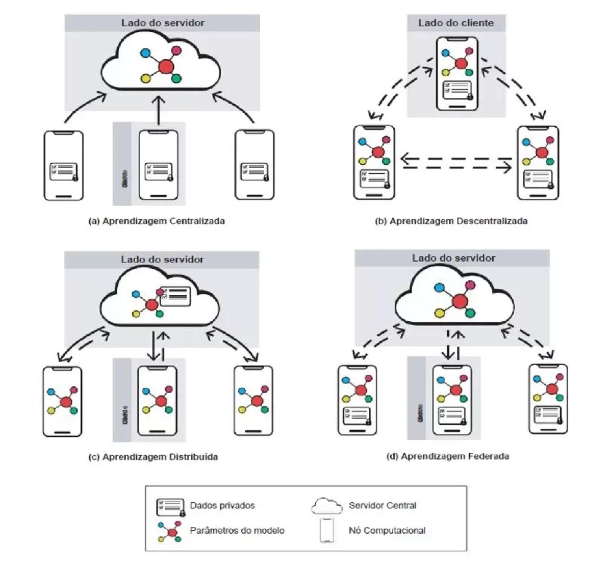
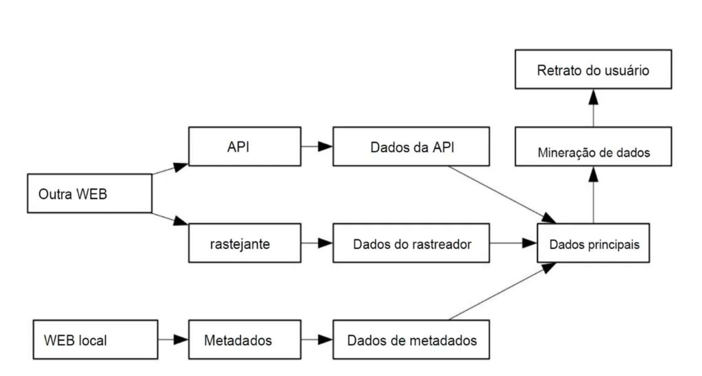

Assistentes virtuais
Assistentes por voz, como Alexa, Siri e Google Assistente, realizam tarefas simples como programar alarmes ou controlar lâmpadas inteligentes.
A inteligência artificial está cada vez mais presente em nossas vidas. Entender seus riscos é essencial para utilizar essa tecnologia de maneira consciente e responsável.
A Inteligência Artificial (IA) já faz parte do nosso cotidiano, estando presente em celulares, redes sociais, ferramentas de pesquisa, assistentes virtuais e em diversas áreas profissionais. Ela facilita tarefas, automatiza processos e ajuda na análise de informações.
Apesar de seus benefícios, o uso da IA também traz consequências negativas. Entre elas estão os riscos à privacidade, a disseminação de informações falsas, os preconceitos reproduzidos por algoritmos e a dependência excessiva da tecnologia. Por isso, é importante conhecer esses problemas e aprender a utilizar a IA com responsabilidade.
A Inteligência Artificial é, em termos simples, a capacidade de um computador aprender e resolver problemas de forma semelhante ao cérebro humano. Em vez de uma pessoa ter de programar cada instrução passo a passo, a máquina analisa um grande volume de dados para descobrir padrões por conta própria e tomar decisões.
No nosso cotidiano, essa tecnologia manifesta-se através da IA especializada, que se foca em realizar com excelência uma única tarefa, como reconhecer a voz num telemóvel, sugerir uma música ou traduzir um texto. Por outro lado, existe a ideia de uma IA geral, aquela capaz de pensar e realizar qualquer atividade humana, mas essa visão pertence ainda ao terreno da ficção científica e do futuro.
No dia a dia, a Inteligência Artificial já está presente em diversas áreas de forma prática:
Assistentes por voz, como Alexa, Siri e Google Assistente, realizam tarefas simples como programar alarmes ou controlar lâmpadas inteligentes.
A IA auxilia médicos ao analisar exames de imagem e raios-X para identificar doenças precocemente e sugerir tratamentos com alta precisão.
Monitora o funcionamento de máquinas em tempo real para prever falhas antes que elas aconteçam, evitando interrupções no trabalho, aumentando a produtividade e reduzindo custos.
A inteligência artificial traz grandes vantagens para a sociedade, mas também impõe desafios importantes que precisam de ser geridos no dia a dia.
A forma como as arquiteturas de aprendizado de máquina são construídas influencia diretamente a segurança dos dados.
Reúne todas as informações num único servidor ou nuvem, o que garante bom desempenho, mas expõe os utilizadores a graves riscos de privacidade.
Abordagens como a aprendizagem descentralizada, distribuída e, em especial, a federada surgem como alternativas mais seguras, pois processam os dados localmente no próprio dispositivo do utilizador e partilham apenas os parâmetros do modelo com o servidor central.

Apesar dessas alternativas tecnológicas, a IA prolifera diversos riscos à privacidade individual. A necessidade constante de volumes gigantescos de dados para treinar esses sistemas resulta numa coleta massiva de informações sensíveis, no processamento de dados sem o devido consentimento e num monitoramento contínuo.
Além disso, a capacidade da IA de cruzar dados e criar perfis comportamentais detalhados abre portas para a manipulação e a discriminação de pessoas, tornando o ecossistema vulnerável a ataques cibernéticos e revelando a urgência de regulamentações específicas.

Para conter esses abusos, surgem leis e iniciativas globais de regulação. A União Europeia aprovou a Lei de IA, que proíbe sistemas nocivos — como reconhecimento facial em tempo real e pontuação social —, além de exigir transparência e fiscalização.
No Brasil, o Projeto de Lei nº 2338/2023 propõe uma abordagem baseada em riscos e direitos, buscando harmonizar a inovação com as diretrizes da Lei Geral de Proteção de Dados (LGPD) e posicionando a Autoridade Nacional de Proteção de Dados (ANPD) como figura central de governança.
Tanto o Regulamento Geral de Proteção de Dados (GDPR) europeu quanto a LGPD brasileira impõem princípios fundamentais às empresas, como o consentimento explícito, a transparência, a minimização dos dados coletados e a garantia de não discriminação em decisões automatizadas.
No entanto, a aplicação prática dessas leis à IA enfrenta entraves significativos, pois a tecnologia reidentifica dados com facilidade e reutiliza informações para finalidades distintas daquelas originalmente autorizadas (repurposing), desafiando os limites tradicionais da proteção de dados.
Um dos maiores dilemas éticos e jurídicos está na opacidade dos algoritmos, muitas vezes tratados como “caixas-pretas” incompreensíveis. A LGPD assegura o direito à explicação e à revisão humana de decisões automatizadas, mas esse direito entra em conflito direto com a defesa do segredo de negócios pelas empresas.
Esse impasse fica evidente em casos reais, como o do sistema COMPAS na justiça criminal dos EUA, a demissão de professores por avaliações opacas e as disputas trabalhistas envolvendo motoristas da Uber, em que a recusa das empresas em abrir a lógica do algoritmo prejudica o devido processo legal e a produção de provas.
Conheça cinco riscos abordados no trabalho e veja como reduzir os problemas durante o uso dessas ferramentas.
A IA não “pensa” como um ser humano; ela prevê palavras com base em estatísticas. Por isso, às vezes ela pode inventar fatos, datas, fontes ou citações com muita convicção.
Muitas ferramentas de IA utilizam as informações digitadas pelas pessoas para treinar seus modelos. Se você inserir dados sensíveis, eles podem ser armazenados nos servidores da empresa ou até expostos a terceiros.
Como a IA é treinada com conteúdos criados por humanos ao longo da história da internet, ela pode replicar preconceitos sociais, estereótipos de gênero, raciais ou culturais.
Usar a IA para fazer todo o trabalho de escrita, raciocínio ou criação de textos pode diminuir sua capacidade de pensar de forma independente e desenvolver ideias próprias.
Ferramentas de IA também são usadas por mal-intencionados para gerar notícias falsas (fake news), textos de phishing (golpes para roubar dados) e clonagem de voz ou imagem (deepfakes).
Assista ao vídeo complementar utilizado na apresentação deste trabalho.
Conclui-se que, para usufruir dos benefícios incontestáveis da Inteligência Artificial sem comprometer a dignidade humana, é indispensável um esforço conjunto entre desenvolvedores, reguladores e sociedade. O avanço da tecnologia precisa ser obrigatoriamente pautado por princípios éticos, pela transparência algorítmica e pela proteção rigorosa dos direitos fundamentais e da privacidade.